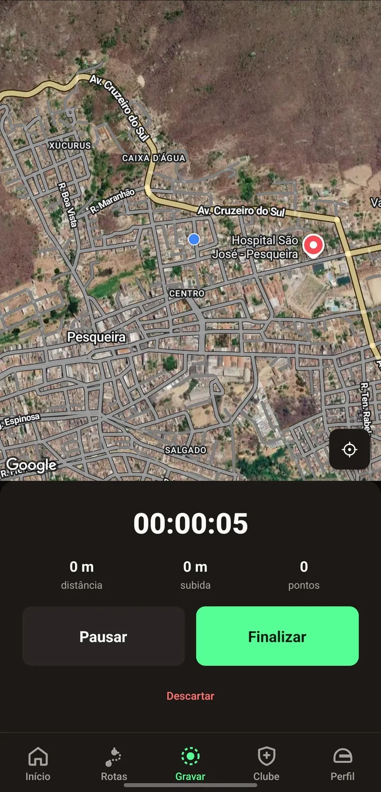
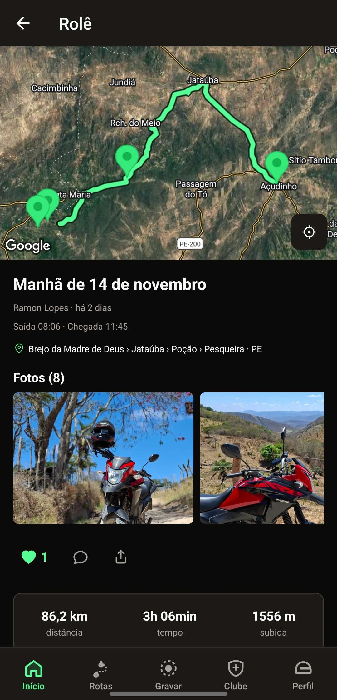
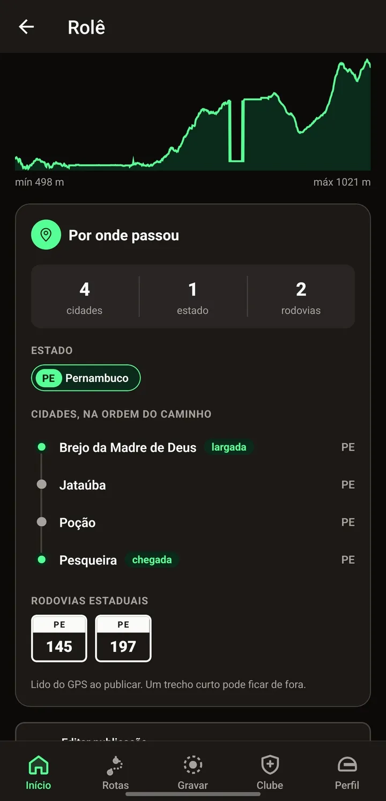
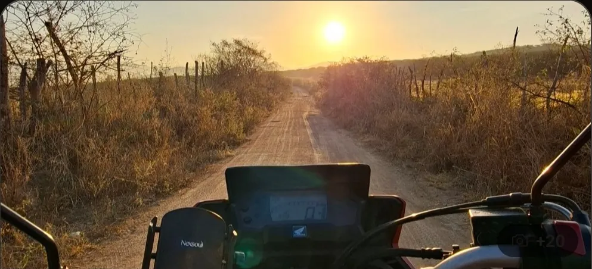
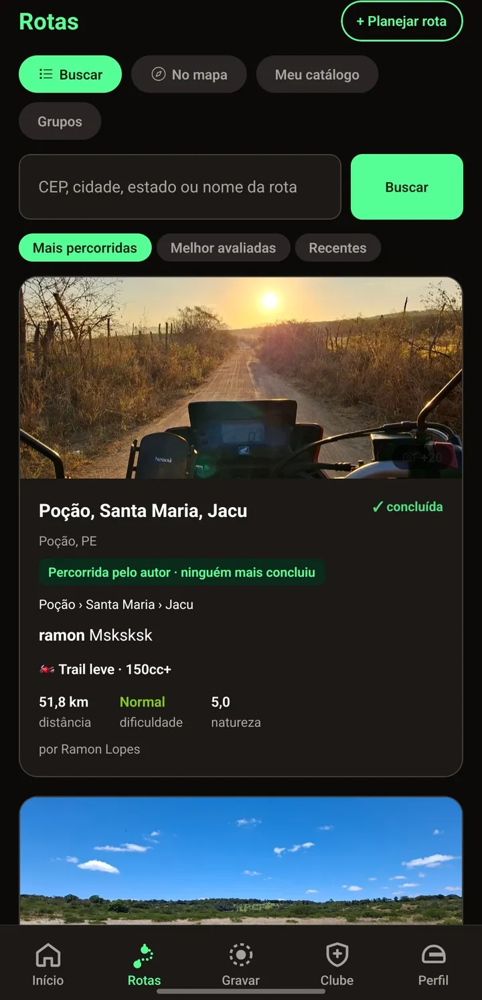
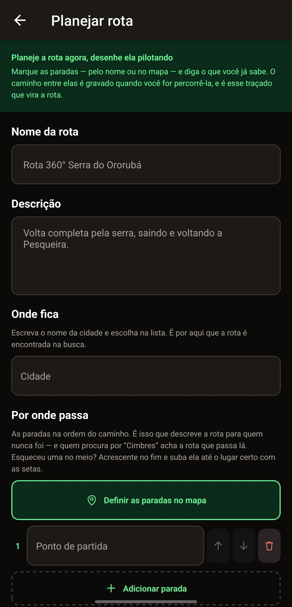
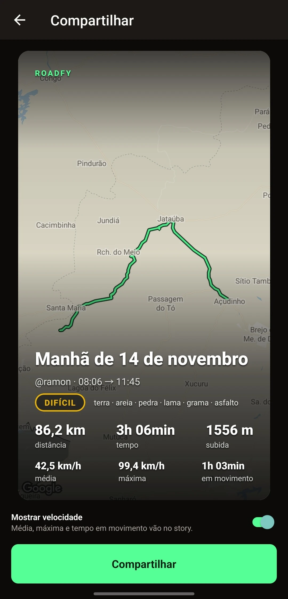
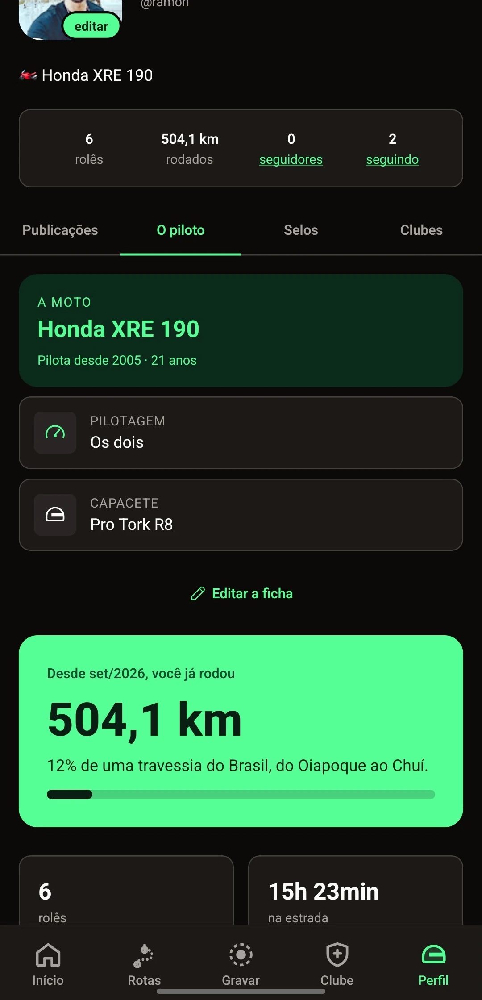

Cada rolê vira um mapa pra contar.
Grave a trilha por GPS, diga como o caminho é de verdade e descubra rotas de outros motociclistas antes de sair de casa.
Em breve no Google Play · Android


Liga, pilota, esquece o celular.
Trilha é lugar sem cobertura, e o sistema fecha aplicativos quando quer. No Roadfy, cada ponto do GPS é salvo no aparelho no instante em que chega.
- Sobrevive à tela apagada, à bateria fraca e ao app ser encerrado.
- Sem rede? O envio acontece sozinho depois, quando houver sinal.
- Publique no sofá, dias depois. O rolê continua seu.

Veja por onde você passou.
Terminou? O Roadfy lê o seu GPS e conta o caminho: cidades na ordem, estado, rodovias e o perfil de altitude da subida.
- Traçado sobre o mapa de satélite, com fotos do caminho.
- Distância, tempo, subida e velocidade, tudo no resumo.
- Rodovias estaduais identificadas automaticamente.


Descubra o caminho antes de sair de casa.
Busque por CEP, cidade, estado ou nome. Veja o traçado no mapa, as paradas, o que a moto precisa ter e a nota de quem já percorreu.

- Mapa de rotas. Cada marcador é uma rota. Toque nele e o traçado aparece na hora.
- Mais percorridas, melhor avaliadas, recentes. Ordene do jeito que fizer sentido pro seu fim de semana.
- Uma rota não é de ninguém. Ela sobrevive a quem a cadastrou, e a galeria dela são as fotos de quem foi.
- Planeje sem sair do lugar. Marque as paradas, e o caminho entre elas é gravado quando você pilotar.


Três notas, não uma.
Uma trilha pode ser difícil, de piso ruim e linda ao mesmo tempo. Uma estrela só esconde exatamente o que faz alguém decidir se vai ou não.
Dificuldade
De 1 a 5, do passeio de domingo ao hardcore. Dá pra filtrar até onde você topa ir.
Qualidade do piso
Terra, areia, pedra, lama, grama ou asfalto. Saiba o que vai debaixo do pneu antes de chegar lá.
Beleza
A nota de natureza. Porque às vezes o caminho vale mais que o destino.
Seu rolê pronto pro story.
Um cartão com o mapa, o traçado, a dificuldade e os números do dia. Sai bonito sem você fazer nada, e a velocidade só aparece se você quiser.
- Média, máxima e tempo em movimento, com chave pra esconder.
- Perfil de piloto: a moto, o capacete, os quilômetros e os selos.
- Clubes para rodar junto: rota, data, ponto de encontro e conversa própria.


Seu endereço não vai junto.
O começo e o fim de uma gravação costumam ser a porta da sua casa. Ao publicar um rolê público, o app corta os primeiros e os últimos 300 metros antes de enviar. Esse trecho não sai do seu aparelho, e nem a gente consegue ver.
- Vem ligado de fábrica, e você decide trilha a trilha.
- Perfil privado esconde os rolês, e seguir vira pedido.
- Apague a conta e tudo que ela guarda, pelo app ou por e-mail.
Tudo no mesmo app.

O próximo rolê já pode ser registrado.
O Roadfy está chegando ao Google Play. Quer entrar antes, como testador? Manda um e-mail.